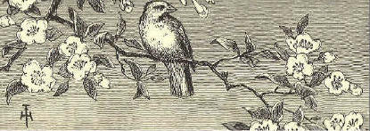

EBook of McGuffey's Second Eclectic Reader by William Holmes McGuffey
Title: McGuffey's Second Eclectic Reader
Author: William Holmes McGuffey
Produced by Don Kostuch
Transcriber's Notes:
Welcome to the schoolroom of 1900. The moral tone is plain. "She is kind to the old blind man."
The exercises are still suitable, and perhaps more helpful than some contemporary alternatives. Much is left to the teacher. Explanations given in the text are enough to get started teaching a child to read and write. Counting in Roman numerals is included as a bonus in the form of lesson numbers.
The author, not listed in the text is William Holmes McGuffey.
Don Kostuch
McGuffey Editions and Colophon are Trademarks of
JOHN WILEY & SONS, Inc..
New York - Chichester-Weinheim-Brisbane-Singapore-Toronto
Copyright, 1879, by Van Antwerp, Bragg & Co.
Copyright, 1896, by American Book Company
Copyright, 1907 and 1920, by H. H. Vail.
Preface
In this book, as well as in the others of the Revised Series, most of the favorite drill selections, which constituted one of the leading excellences of MCGUFFEY'S READERS, have been retained. New selections have been inserted only when they seemed manifest improvements on those formerly used.
The plan of this Reader is a continuation and extension of that pursued in the First Reader.
If the pupil is not familiar with the diacritical marks, he should be carefully drilled, as suggested on page 7, until the marked letter instantly suggests the correct sound. He is then prepared to study his reading lessons without any assistance from the teacher.
All new words are given at the head of each lesson. When these are mastered, the main difficulties left for the pupil are those of expression. In the latter portion of the book the simpler derivatives,—such as are formed by adding one or two letters,—possessives, plurals, verbal forms, etc.,—are omitted if the primitive word has been given. In this way the pupil is gradually led to the mastery of words as ordinarily printed.
A few of the most usual abbreviations have been introduced,—such as Mr., Mrs., etc. These should be carefully explained, not only as to their meaning and use, but as to the reason for their use.
Great care has been taken to have the illustrations worthy of the reputation MCGUFFEY'S READERS have attained, and some of the foremost designers of this country have contributed to the embellishment of the book.
Many of these pictures will serve admirably for lessons in language, in extension and explanation of the text. The imagination of the artist has, in some cases, filled in details not found in the text.
The thanks of the publishers are due to very many experienced teachers, who have contributed their valuable suggestions.
June, 1879.
Lessons. 1. Evening at Home 2. Bubbles 3. Willie's Letter (Script) 4. The Little Star 5. Two Dogs 6. Afraid in the Dark 7. Baby Bye 8. Puss and her Kittens 9. Kittie and Mousie 10. At Work 11. What a Bird Taught 12. Susie Sunbeam 13. If I were a Sun beam 14. Henry, the Bootblack 15. Don't Wake the Baby (Script) 16. A Kind Brother 17. My Good-far-nothing 18. The Kingbird 19. Evening Hymn 20. The Quarrel 21. The Bee 22. The Song of the Bee 23. The Torn Doll 24. Sheep-shearing 25. The Clouds 26. Patty and the Squirrel 27. The Sparrow 28. Sam and Harry 29. The Little Rill 30. The Boat Upset 31. Mary's Letter (Script) 32. The Tiger 33. The Fireside 34. Birdie's Morning Song 35. Willie and Bounce 36. Willie and Bounce 37. The Kitchen Clock 38. The New Scales 39. The Bear and the Children 40. The Little Harebell (Script) 41. The Fishhawk 42. What the Leaf said 43. The Wind and the Leaves 44. Mamma's Present 45. Mary's Story 46. Ralph Wick 47. Coasting down the Hill (Script) 48. The Fox and the Ducks 49. Pretty is that Pretty does 50. The Story-teller 51. The Story-teller 52. The Owl 53. The Owl 54. Grandfather's Story 55. God is Great and Good 56. A Good Old Man 57. The Greedy Girl 68. A Place for Everything 69. My Mother (Script) 60. The Broken Window 61. The Broken Window 62. Frank and the Hourglass 63. March 64. Jenny's Call 65. Poor Davy 66. Alice's Supper 67. A Snowstorm 68. Bessie 69. Bessie 70. Cheerfulness (Script) 71. Lullaby
SUGGESTIONS TO TEACHERS.-Thorough and frequent drills on the elementary sounds are useful in correcting vicious habits of pronunciation and in strengthening the vocal organs.
As a rule, only one or two sounds should be employed at one lesson. Care should be taken that the pupils observe and practice these sounds correctly in their reading.
Long Sounds
Sound as in Sound as in a ate e err a care i ice a arm o ode a last u use a all u burn e eve oo fool
Sound as in Sound as in a am o odd e end u up i in oo look
Sound as in Sound as in oi oil ou out oy boy ow now
Sound as in Sound as in b bib v valve d did th this g gig z zin j jug z azure n nine r rare m maim w we ng hang y yet l lull
Sound as in Sound as in f fifi t tat h him sh she k kite ch chat p pipe th thick s same wh why
Sub for as in Sub for as in a o what y i myth e a there c k can e a feint c a cite i e police ch sh chaise i e sir ch k chaos o u son g j gem o oo to n ng ink o oo wolf s z as o a fork s sh sure o u work x gz exact u oo full gh f laugh u oo rude ph f phlox y i fly qu k pique qu kw quit
Punctuation Marks are used to make the sense more clear.
A Period (.) is used at the end of a sentence, and after an abbreviation; as,
James was quite sick. Dr. Jones was called to see him.
An Interrogation Mark (?) is used at the end of a question; as,
Where is John going?
An Exclamation Mark (!) is used after words or sentences expressing some strong feeling; as,
Alas, my noble boy! that thou shouldst die!
The Comma (,), Semicolon (;), and Colon (:) are used to separate the parts of a sentence.
The Hyphen (-) is used to join the parts of a compound word; as, text-book: it is also used at the end of a line in print or script, when a word is divided; as in the word "sentence," near the bottom of page 9.

newspaper cold order seem through
stockings chat story light Harry
branches kiss burns Mrs. events
another Mr. stool lamp mends
1. It is winter. The cold wind whistles through the branches of the trees.
2. Mr. Brown has done his day's work, and his children, Harry and Kate, have come home from school. They learned their lessons well to-day, and both feel happy
3. Tea is over. Mrs. Brown has put the little sitting room in order. The fire burns brightly. One lamp gives light enough for all. On the stool is a basket of fine apples. They seem to say, "Won't you have one?"
4. Harry and Kate read a story in a new book. The father reads his newspaper, and the mother mends Harry's stockings.
5. By and by, they will tell one another what they have been reading about, and will have a chat over the events of the day.
6. Harry and Kate's bedtime will come first. I think I see them kiss their dear father and mother a sweet good night.
7. Do you not wish that every boy and girl could have a home like this?
beautiful porch rainbow burst
bubbling same biggest sneeze colors
main soap wash red many (meny)
1. The boys have come out on the porch to blow bubbles. The old cat is asleep on the mat by the door.
2. "Ha! ha!" laughs Robert, as a bubble comes down softly on the old cat's back, and does not burst.
3. Willie tries to make his bubble do the same. This time it comes down on the cat's face, and makes her sneeze.
4. "She would rather wash her face without soap," says Harry. "Now let us see who can make the biggest bubble."
5. "Mine is the biggest," says Robert. "See how high it floats in the air! I can see—ah! it has burst."
6. "I can see the house and the trees and the sky in mine," says Willie; "and such beautiful colors."
7. "How many, Willie?"
8. "Red, one; blue, two; there—they are all out. Let us try again."
9. "I know how many colors there are," says Harry. "Just as many as there are in the rainbow."
10. "Do you know how many that is?"
rubber gun parlor street
number ten o'clock shoot
WILLIE'S LETTER.
New York, Dec. 10, 1878. Dear Santa Claus: Papa is going to give me a Christmas tree, and he says that you will put nice things on it if I ask you. I would like a gun that will shoot, and a rubber ball that I can throw hard, and that will not break Mamma's windows or the big glass in the parlor. Now, please don't forget to come. I live on Fourth St., number ten. I will go to bed at eight o'clock, and shut my eyes tight. I will not look, indeed I won't. Your little boy, Willie.
above world dark oft
never spark dew till
diamond twinkle blazing
The Little Star
1. Twinkle, twinkle, little star;
How I wonder what you are,
Up above the world so high,
Like a diamond in the sky!
2. When the blazing sun is set,
And the grass with dew is wet,
Then you show your little light;
Twinkle, twinkle, all the night.
3. Then, if I wore in the dark,
I would thank you for your spark.
I could not see which way to go,
If you did not twinkle so.
4. And when I am sound asleep,
Oft you through my window peep;
For you never shut your eye,
Till the sun is in the sky.
behind together noble Scotch
Dodger minutes crib wagon
terrier country scold fellow
shaggy friskily fits cellar
guards Newfoundland yard harness
1. James White has two dogs. One is a Newfoundland dog, and the other is a Scotch terrier.
2. The Newfoundland is a large, noble fellow. He is black, with a white spot, and with long, shaggy hair. His name is Sport.
3. Sport is a good watchdog, and a kind playfellow. Every night he guards the house while James and his father are asleep.
4. In the daytime, James often uses Sport for his horse. He has a little wagon, and a set of small harness which just fits the dog.
5. He hitches Sport to this wagon, and drives over the country. In this way, he can go almost as fast as his father with the old family horse.
6. The name of James's Scotch terrier is Dodger. He is called Dodger because he jumps about so friskily. He is up on a chair, under the table, behind the door, down cellar, and out in the yard,—all in a minute.
7. Dodger has very bright eyes, and he does many funny things. He likes to put his paws up on the crib, and watch the baby.
8. The other day he took baby's red stocking, and had great fun with it; but he spoiled it in his play, and James had to scold him.
9. Everyone likes to see James White with his two dogs. They always seem very happy together.
between bureau (-ro) stairs needle
afraid shadow held stir
1. "Willie, will you run upstairs, and get my needle book from the bureau?"
2. But Willie did not stir. "Willie!" said mamma. She thought he had not heard.
3. "I'm afraid," said Willie.
4. "Afraid of what?"
5. "It's dark up there."
6. "What is the dark?" asked mamma. "See! It is nothing but a shadow." And she held her hand between the lamp and the workbasket on the table.
7. "Now it is dark in the basket; but as soon as I take my hand away, it is light."
8. "Come and stand between the lamp and the wall, Willie. See! There is your shadow on the wall. Can your shadow hurt you?"
9. "Oh no, mamma! I am sure it can not hurt me."
10. "Well, the dark is only a big shadow over everything."
11. "What makes the big shadow, mamma?"
12. "I will tell you all about that, Willie, when you are a little older. But now, I wish you would find me a brave boy who is not afraid of shadows, to run upstairs and get my needlebook."
13. "I am bravo, mamma. I will go. —Here it is."
14. "Thank you, my brave little man. You see the dark didn't hurt you."
Beautiful faces are they that wear
The light of a pleasant spirit there;
Beautiful hands are they that do
Deeds that are noble good and true;
Beautiful feet are they that go
Swiftly to lighten another's woe.
spiders tickling stay neck nose secret crawls
legs beck ope goes toes speck choose
dot nod shoes spread believe six
1. Baby Bye,
Here's a fly;
We will watch him, you and I.
How he crawls
Up the walls,
Yet he never falls!
I believe with six such legs
You and I could walk on eggs.
There he goes
On his toes,
Tickling Baby's nose.
2. Spots of red
Dot his head;
Rainbows on his back are spread;
That small speck
Is his neck;
See him nod and beck!
I can show you, if you choose,
Where to look to find his shoes,
Three small pairs,
Made of hairs;
These he always wears.
3. Flies can see
More than we;
So how bright their eyes must be!
Little fly,
Ope your eye;
Spiders are near by.
For a secret I can tell,
Spiders never use flies well;
Then away,
Do not stay.
Little fly, good day.
servant suddenly longer returned lived tired
since five anxious trouble certain nealy
dozen seven attic strange great proper
coal seemed
1. Puss, with her three kittens, had lived in the coal cellar; but one day she thought she would carry them to the attic.
2. The servant thought that was not the proper place for them; so she carried them back to the cellar.
3. Puss was certain that she wanted them in the attic; so she carried them there again and again, five, six, seven, —yes, a dozen times; for each time the servant took them back to the cellar.
4. Poor puss was nearly tired out, and could carry them no longer.
5. Suddenly she went away. Where do you think she went?
6. She was gone a long time. When she returned, she had a strange cat with her that we had never seen before.
7. She seemed to tell him all about her great trouble, and he listened to her story.
8. Then the strange cat took the little kittens, one by one, and carried them to the attic. After this he went away, and we have never seen him since.
9. The servant then left the kittens in the attic, for she saw how anxious puss was to have them stay there.
10. Was not the strange cat kind to puss? This lesson should teach children to be ever ready to help one another.
nine mousie fro frolic bit slipped
spied crow teeth pearl used
1. Once there was a little kitty,
White as the snow;
In a barn he used to frolic,
Long time ago.
2. In the barn a little mousie
Ran to and fro;
For she heard the little kitty,
Long time ago.
3. Two black eyes had little kitty,
Black as a crow;
And they spied the little mousie,
Long time ago.
4. Four soft paws had little kitty,
Paws soft as snow;
And they caught the little mousie,
Long time ago.
5. Nine pearl teeth had little kitty,
All in a row;
And they bit the little mousie,
Long time ago.
6. When the teeth bit little mousie,
Mousie cried out "Oh!"
But she slipped away from kitty,
Long time ago.
washed hours(ours) precious game
harm any (eny) brushed end
1. A little play does not harm any one, but does much good. After play, we should be glad to work.
2. I knew a boy who liked a good game very much. He could run, swim, jump, and play ball; and was always merry when out of school.
3. But he knew that time is not all for play; that our minutes, hours, and days are very precious.
4. At the end of his play, he would go home. After he had washed his face and hands, and brushed his hair, he would help his mother, or read in his book, or write upon his slate.
5. He used to say, "One thing at a time." When he had done with work, he would play; but he did not try to play and to work at the same time.
twit-twee bough (bow) twit-twit topmost lock
spray mate closely rosy answer (anser)
1. Why do you come to my apple tree,
Little bird so gray?
Twit-twit, twit-twit, twit-twit-twee!
That was all he would say.
2. Why do you lock your rosy feet
So closely round the spray?
Twit-twit, twit-twit, twit-tweet!
That was all he would say.
3. Why on the topmost bough do you get,
Little bird so gray?
Twit-twit-twee! twit-twit-twit!
That was all he would say.
4. Where is your mate? come, answer me,
Little bird so gray.
Twit-twit-twit! twit-twit-twee!
That was all he would say.
Alice Cary.
brightness pleasant learned dress
playmates un kind ragged word
questions smiling crowed child
Sunbeam cheered Susie gave
gladness unless name gate
1. Susie Sunbeam was not her real name; that was Susan Brown. But every one called her Susie Sunbeam, because she had such a sweet, smiling face, and always brought brightness with her when she came.
2. Her grandfather first gave her this name, and it seemed to fit the little girl so nicely that soon it took the place of her own.
3. Even when a baby, Susie laughed and crowed from morning till night. No one ever heard her cry unless she was sick or hurt.
4. When she had learned to walk, she loved to go about the house and get things for her mother, and in this way save her as many steps as she could.
5. She would sit by her mother's side for an hour at a time, and ask her ever so many questions, or she would take her new book and read.
6. Susie was always pleasant in her play with other children. She never used an unkind word, but tried to do whatever would please her playmates best.
7. One day, a poor little girl with a very ragged dress was going by and Susie heard some children teasing her and making fun of her.
8. She at once ran out to the gate, and asked the poor little girl to come in. "What are you crying for?" Susie asked.
9. "Because they all laugh at me," she said.
10. Then Susie took the little girl into the house. She cheered her up with kind words, and gave her a nice dress and a pair of shoes.
11. This brought real joy and gladness to the poor child, and she, too, thought that Susie was rightly called Sunbeam.
woodlands divine raised until drooping blessed
whose seek upward hovels inner steal
heaven hearts lilies die roaming
1. "If I were a sunbeam,
I know what I'd do;
I would seek white lilies,
Roaming woodlands through.
I would steal among them,
Softest light I'd shed,
Until every lily
Raised its drooping head.
2. "If I were a sunbeam,
I know where I'd go;
Into lowly hovels,
Dark with want and woe:
Till sad hearts looked upward,
I would shine and shine;
Then they'd think of heaven,
Their sweet home and mine."
3. Are you not a sunbeam,
Child, whose life is glad
With an inner brightness
Sunshine never had?
Oh, as God has blessed you,
Scatter light divine!
For there is no sunbeam
But must die or shine.
support along boots belong dollar years
manage taught corner notice money blacking
gentle men honest (onest) quite buy earned
1. Henry was a kind, good boy. His father was dead, and his mother was very poor. He had a little sister about two years old.
2. He wanted to help his mother, for she could not always earn enough to buy food for her little family.
3. One day, a man gave him a dollar for finding a pocketbook which he had lost.
4. Henry might have kept all the money, for no one saw him when he found it. But his mother had taught him to be honest, and never to keep what did not belong, to him.
5. With the dollar he bought a box, three brushes, and some blacking. He then went to the corner of the street, and said to every one whose boots did not look nice, "Black your boots, sir, please?"
6. He was so polite that gentlemen soon began to notice him, and to let him black their boots. The first day he brought home fifty cents, which he gave to his mother to buy food with.
7. When he gave her the money, she said, as she dropped a tear of joy, "You are a dear, good boy, Henry. I did not know how I could earn enough to buy bread with, but now I think we can manage to get along quite well,"
8. Henry worked all the day, and went to school in the evening. He earned almost enough to support his mother and his little sister.
tread whisper softly talk cheerful careful
Baby sleeps, so we must tread
Softly round her little bed,
And be careful that our toys
Don not fall and make a noise.
We must not talk, but whisper low,
Mother wants to work, we know,
That, when father comes to tea,
All may neat and cheerful be.
full load heavy middle heavier
slip wrong handle brother deceived
1. A boy was once sent from home to take a basket of things to his grandmother.
2. The basket was so full that it was very heavy. So his little brother went with him, to help carry the load.
3. They put a pole under the handle of the basket, and each then took hold of an end of the pole. In this way they could carry the basket very nicely.
4. Now the older boy thought, "My brother Tom does not know about this pole.
5. "If I slip the basket near him, his side will be heavy, and mine light; but if the basket is in the middle of the pole, it will be as heavy for me as it is for him.
6. "Tom does not know this as I do. But I will not do it. It would be wrong, and I will not do what is wrong."
7. Then he slipped the basket quite near his own end of the pole. His load was now heavier than that of his little brother.
8. Yet he was happy; for he felt that he had done right. Had he deceived his brother, he would not have felt at all happy.
busy (bizzy) mischief looked unto glee
contriving ringlets noddle drew nun
pressing fingers carpet wise lips
embrace ponder lashes climb true
1.
"What are you good for, my brave little man?
Answer that question for me, if you can,—
You, with your fingers as white as a nun,—
You, with your ringlets as bright as the sun.
All the day long, with your busy contriving,
Into all mischief and fun you are driving;
See if your wise little noddle can tell
What you are good for. Now ponder it well."
2.
Over the carpet the dear little feet
Came with a patter to climb on my seat;
Two merry eyes, full of frolic and glee,
Under their lashes looked up unto me;
Two little hands pressing soft on my face,
Drew me down close in a loving embrace;
Two rosy lips gave the answer so true,
"Good to love you, mamma, good to love you."
Emily Huntington Miller.
berries strikes robin eagle short king rid
foe dart fails sharp hawk worms active
1. The kingbird is not bigger than a robin.
2. He eats flies, and worms, and bugs, and berries.
3. He builds his nest in a tree, near some house.
4. When there are young ones in the nest, he sits on the top of a tree near them.
5. He watches to see that no bird comes to hurt them or their mother.
6. If a hawk, a crow, or even an eagle comes near, he makes a dash at it.
7. Though he is so small, he is brave, and he is also very active.
8. He never fails to drive off other birds from his nest.
9. He flies around and around the eagle, and suddenly strikes him with his sharp bill.
10. He strikes at his eye, and then darts away before the eagle can catch him.
11. Or he strikes from behind, and is off again before the eagle can turn round.
12. In a short time, the great eagle is tired of such hard blows, and flies away. He is very glad to get rid of his foe.
13. Is not the little fellow a brave bird?
14. Because he can drive off all other birds, he is called the KINGBIRD.
watching gathers angels begin
darkness across lonely beasts
1. Now the day is over,
Night is drawing nigh,
Shadows of the evening
Steal across the sky.
2. Now the darkness gathers,
Stars begin to peep;
Birds, and beasts, and flowers
Soon will be asleep.
3. Through the lonely darkness,
May the angels spread
Their white wings above me,
Watching round my bed.
divided quarrel agree thus seytle
settling kernel equal apt parts
1. Under a great tree in the woods, two boys saw a fine, large nut, and both ran to get it.
2. James got to it first, and picked it up.
3. "It is mine," said John, "for I was the first to see it."
4. "No, it is mine" said James, "for I was the first to pick it up."
5. Thus, they at once began to quarrel about the nut.
6. As they could not agree whose it should be, they called an older boy, and asked him.
7. The older boy said, "I will settle this quarrel."
8. He took the nut, and broke the shell. He then took out the kernel, and divided the shell into two parts, as nearly equal as he could.
9. "This half of the shell," said he, "belongs to the boy who first saw the nut.
10. "And this half belongs to the boy who picked it up.
11. "The kernel of the nut, I shall keep as my pay for settling the quarrel.
12. "This is the way," said he, laughing, "in which quarrels are very apt to end."
creatures drones inside hive idle
de fense driven killed cells size
workers queen stings shape wax
1. Bees live in a house that is called a hive. They are of three kinds,—workers, drones, and queens.
2. Only one queen can live in each hive. If she is lost or dead, the other bees will stop their work.
3. They are very wise and busy little creatures. They all join together to build cells of wax for their honey.
4. Each bee takes its proper place, and does its own work. Some go out and gather honey from the flowers; others stay at home and work inside the hive.
5. The cells which they build, are all of one shape and size, and no room is left between them.
6. The cells are not round, but have six sides. 7. Did you ever look into a glass hive to see the bees while at work? It is pleasant to see how busy they always are.
8. But the drones do not work. Before winter comes, all the drones are driven from the hive or killed, that they may not eat the honey which they did not gather.
9. It is not quite safe for children to handle bees. They have sharp stings that they know well how to use in their defense.
How doth the little busy bee
Improve each shining hour.
And gather honey all the day
From every opening flower!
" href="summit" />
blossoms dreary weary pinks smelling toiling
levies buzz fragrant thistle weeds scent
treasure yellow meadow tax summer clover
cloudy daisy daffodillies columbine humming
1. Buzz! buzz! buzz!
This is the song of the bee.
His legs are of yellow;
A jolly, good fellow,
And yet a great worker is he.
2. In days that are sunny
He's getting his honey;
In days that are cloudy
He's making his wax:
On pinks and on lilies,
And gay daffodillies,
And columbine blossoms,
He levies a tax!
3. Buzz! buzz! buzz!
The sweet-smelling clover,
He, humming, hangs over;
The scent of the roses
Makes fragrant his wings:
He never gets lazy;
From thistle and daisy,
And weeds of the meadow,
Some treasure he brings.
4. Buzz! buzz! buzz!
From morning's first light
Till the coming of night,
He's singing and toiling
The summer day through.
Oh! we may get weary,
And think work is dreary;
'Tis harder by far
To have nothing to do.
Marian Douglas.
unhappy promised heedless became growing
careless harshly leaving easily effects
annoy ma'am blame worse torn
hardly nicest spend habit evil
1. Mary Armstrong was a pretty little girl, but she was heedless about some things.
2. Her way of leaving her books and playthings just where she had used them last, gave her mother much trouble in picking them up and putting them in their proper places.
3. She had often told Mary the evil effects of being so careless. Her books became spoiled, and her toys broken.
4. But worse than this was the growing habit of carelessness, which would be of great harm to her all her life. It would make her unhappy, and would annoy her friends.
5. One day Mary and her mother went out into their pleasant yard, to spend an hour in the open air. Mrs. Armstrong took her work with her.
6. Mary ran about and played with Dash, her pet dog, and was having a happy time.
7. But in a corner of the yard she found her nicest doll all torn and broken, and its dress covered with mud.
8. She knew, at once, that Dash had done this, and she scolded him harshly.
9. Carrying the broken doll to her mamma. she showed it to her, and could hardly keep from crying.
10. Mrs. Armstrong asked Mary if she had not left the doll on the porch where Dash could easily get it; and Mary had to answer, "Yes, ma'am."
11. "Then you must not blame the dog, Mary, for he does not know it is wrong for him to play with your doll. I hope this will be a lesson to you hereafter, to put your things away when you are through playing."
12. "I will try," said Mary. And her mother promised to mend the doll as well as she could.
thoroughly month dried dyed cuts shearer sheep
those spun dirt otherwise woven cloth wool rub
1. Sheep are washed and sheared some time in the month of June. This should be done quite early in the month, before the hot days begin.
2. It is fine sport for those who look on, hut not much fun for the sheep.
3. It is best for the sheep to have the wool taken off; otherwise they would suffer in the summer time.
4. When the time comes for washing the sheep, they are driven to a pond or a little river.
5. Then they are thrown into the water, one at a time. The men who are in the water catch them, and squeeze the wet wool with their hands to get the dirt all out of it.
6. Then the wool is thoroughly dried, the sheep are taken to the shearer; and he cuts off the wool with a large pair of shears.
7. It is then dyed, spun, and woven into cloth.
8. In a short time, before the cold winter comes, new wool grows out on the sheep. By the corning of spring there is so much, that it must be cut off again.
bearers earth warm sultry wander
rays grain clouds o'er we're
1. "Clouds that wander through the sky, Sometimes low and sometimes high; In the darkness of the night, In the sunshine warm and bright. Ah! I wonder much if you Have any useful work to do."
2.
"Yes, we're busy night and day,
As o'er the earth we take our way.
We are bearers of the rain
To the grasses, and flowers, and grain;
We guard you from the sun's bright rays,
In the sultry summer days."
people forest squirrel cool nearest tame hollow
snug shoulder miles sticks gently though Patty
1. Little Patty lives in a log house near a great forest. She has no sisters, and her big brothers are away all day helping their father.
2. But Patty is never lonely; for, though the nearest house is miles away, she has many little friends. Here are two of them that live in the woods.
3. But how did Patty teach them to be so tame? Patty came to the woods often, and was always so quiet and gentle that the squirrels soon found they need not be afraid of her.
4. She brought her bread and milk to eat under the trees, and was sure to leave crumbs for the squirrels.
5. When they came near, she sat very still and watched them. So, little by little, she made them her friends, till, at last, they would sit on her shoulder, and eat from her hand.
6. Squirrels build for themselves summer houses. Those are made of leaves, and sticks, and moss. They are nice and cool for summer, but would never do for the winter cold and snow.
7. So these wise little people find a hollow in an old tree. They make it warm and snug with soft moss and leaves; and here the squirrels live all through the long winter.
frightened intend wheat Thomas complains plums
choose shocking sparrow ripest robbing
breakfast plenty share treat tales wait
1. Glad to see you, little bird;
'Twas your little chirp I heard:
What did you intend to say?
"Give me something this cold day"?
2. That I will, and plenty, too;
All the crumbs I saved for you.
Don't be frightened—here's a treat:
I will wait and see you eat.
3. Shocking tales I hear of you;
Chirp, and tell me, are they true?
Robbing all the summer long;
Don't you think it very wrong?
4. Thomas says you steal his wheat;
John complains, his plums you eat—
Choose the ripest for your share,
Never asking whose they are.
5. But I will not try to know
What you did so long ago:
There's your breakfast, eat away;
Come to see me every day.
afternoon supper deep length carriage threw hedge stood truly road few sad
1. One fine summer afternoon, Sam was walking home from school. He went along slowly, reading a book.
2. Sam had spent all his money for the book, but he was a happy boy.
3. At length he came into the highroad, where there was a gate. A blind man stood, holding it open.
4. The poor man said, "Please give me a few cents to buy some bread!" But Sam gave him nothing.
5. What! did Sam give the poor blind man nothing? Yes; for, as I told you, he had spent all his money.
6. So Sam walked on, very sad. Soon after, a fine carriage came up, and in it were Harry and his mother.
7. The blind man stood, and held out his hat. "Let us give the poor man something," said Harry to his mother.
8. His mother gave him some cents. Harry took them, but did not put them into the man's hat.
9. He threw them into the hedge as far as he could. The poor man could not find them, for, you know, ho was blind.
10. Sam had turned back to look at the fine carriage. He saw Harry throw the cents into the hedge; so he came back at once, and looked for the money until he found it all for the blind man.
11. This took so long a time, that he almost lost his supper.
12. Which of the boys do you think was truly kind to the poor man?
13. I know which he thanked most in his heart.
rippling fringe stray thou mill
village brink clear wild hill
course bathe tiny pool rill
1. Run, run, thou tiny rill;
Run, and turn the village mill;
Run, and fill the deep, clear pool
In the woodland's shade so cool,
Where the sheep love best to stray
In the sultry summer day;
Where the wild birds bathe and drink,
And the wild flowers fringe the brink.
2. Run, run, thou tiny rill,
Round the rocks, and down the hill;
Sing to every child like me;
The birds will join you, full of glee:
And we will listen to the song
You sing, your rippling course along.
hastened possible balance Edgar save
boatman danger quickly move trip
stretched several started folks fell
1. "Sit still, children. Do not move about in the boat," said Mr. Rose to the young folks he was taking for a trip on the water.
2. The boat was a large one, and could not easily be upset. There were in it Mr. and Mrs. Rose, the boatman, and several little boys and girls.
3. "Keep still, please, young gentlemen," said the boatman, when Edgar Rose and Thomas Read began to move from one side to the other.
4. They kept quiet for a short time only. Edgar soon wanted a stick which Thomas held in his hand. He lost his balance in trying to get the stick, and fell into the water.
5. Mr. and Mrs. Rose both started up, and stretched out their arms to save him; but in so doing, they upset the boat.
6. Every one fell into the water, and all were in the greatest danger of being drowned.
7. Another boat was near, with but one man in it. He hastened to them as quickly as possible, and saved them from drowning.
8. Children should always be careful and quiet when they are in a boat on the water, and should obey what older people tell them.
Forest Hill, June 25, 1878 My Dear Fanny: This morning while out rowing, we all came near being drowned. Brother Ed, in trying to take a stick from Tom Reed, tripped and fell out of the boat. Papa and Mamma caught at him to save him, and before we knew it we were all in the water. The boat upset and how we were all saved I can hardly tell. A man in another boat which was near, picked us up. Had it not been for this, you would to-day have no cousin. Mary Rose.
lion body stripes delight English
prey tiger collar tigress frightful
seize chain un like swiftest animals
roar giant slightest officers whiskers
1. The tiger is a giant cat. His body is nearly covered with black stripes.
2. Unlike the lion, he runs so fast that the swiftest horse can not overtake him. He goes over the ground by making bounds or springs, one after another.
3. By night, as well as by day, the tiger watches for his prey. With a frightful roar, he will seize a man, and carry him off.
4. Have you ever thought what use whiskers are to cats? Lions have great whiskers, and so have tigers and all other animals of the cat kind.
5. Whenever you find an animal with whiskers like the cat's, you may be sure that animal steals softly among branches and thick bushes.
6. By the slightest touch on the tiger's whiskers, he knows when there is anything in his road.
7. A few years ago, some English officers went out to hunt. When coming home from their day's sport, they found a little tiger kitten.
8. They took it with them and tied it, with a collar and chain, to the pole of their tent. It played about, to the delight of all who saw it.
9. One evening, just as it was growing dark, they heard a sound that frightened them greatly. It was the roar of a tiger.
10. The kitten pulled at the chain, and tried to break away. With a sharp cry, it answered the voice outside.
11. All at once, a large tigress bounded into the middle of the tent. She caught her kitten by the neck, and broke the chain which bound it.
12. Then turning to the door of the tent, she dashed away as suddenly as she had come.
then usual cousin fireside sewing (so-)
Katie better crackle knitting perhaps
Jane reason to-night happier instructive
1. One winter night, Mrs. Lord and her two little girls sat by a bright fire in their pleasant home. The girls were sewing, and their mother was busy at her knitting.
2. At last, Katie finished her work, and, looking up, said, "Mother, I think the fire is brighter than usual. How I love to hear it crackle!"
3. "And I was about to say," cried Mary, "that this is a better light than we had last night."
4. "My dears," said their mother, "it must be that you feel happier than usual to-night. Perhaps that is the reason why you think the fire better, and the light brighter."
5. "But, mother," said Mary, "I do not see why we are happier now than we were then; for last night cousin Jane was here, and we played 'Puss in the corner' and 'Blind man' until we all were tired."
6. "I know! I know why!" said Katie. "It is because we have all been doing something useful to-night. We feel happy because we have been busy."
7. "You are right, my dear," said their mother. "I am glad you have both learned that there may be something more pleasant than play, and, at the same time, more instructive."
dewdrops hopping laziest bends sung
patience in stead darling ought rest
slumber myself reply miss lose
1. Wake up, little darling, the birdies are out,
And here you are still in your nest!
The laziest birdie is hopping about;
You ought to be up with the rest.
Wake up, little darling, wake up!
2. Oh, see what you miss when you
slumber so long—
The dewdrops, the beautiful sky!
I can not sing half what you lose in my song;
And yet, not a word in reply.
Wake up, little darling, wake up!
3. I've sung myself quite out of patience with you,
While mother bends o'er your dear head;
Now birdie has done all that birdie can do:
Her kisses will wake you instead!
Wake up, little darling, wake up!
George Cooper.
sent store Bounce floating load circle
ripples catching cake blocks strolled however
1. Two fast friends were Willie Brown and his little dog Bounce. Willie could never think of taking a walk without Bounce. Cake and play were equally shared between them.
2. Willie taught his dog many cunning tricks, and often said that Bounce could do almost anything in the world but talk.
3. There came a time, however, when Bounce really told Willie's father something, though he could not talk. Let me tell you how he did this.
4. It was on a bright summer afternoon. Willie had strolled with Bounce down to the river, which was not more than two blocks from his father's store.
5. Willie began to throw stones into the water, and to watch the ripples as they made one circle after another.
6. Bounce lay on the grass, watching the flies that buzzed around his nose, and catching any that came too near.
7. There were some logs floating in the river near the shore. Willie jumped upon one of them, to see if he could throw a stone across the river.
8. He drew back, and sent the stone with all his might. just as it left his hand, the log turned, and he fell into the water.
9. He was very much frightened, for he did not know how to swim, and there was no one to hear, though he called as loud as he could for help.
yelp loudly against looking barking
spring clothes opened distress scratched
1. Poor little Bounce gave a great yelp of distress. If he had been a big water dog, he could have jumped in and brought his master out.
2. He ran up and down the bank two or three times, barking, looking first at Willie and then around. Then he started, as fast as he could run, up the street to the store.
3. When he got there the door was shut, but he scratched against it and barked loudly, until some one came and opened it.
4. He caught hold of Mr. Brown's clothes, then ran to the door, then back again, catching at him, barking, and jumping.
5. A friend who was in the store said to Mr. Brown, "Something must be wrong; I would put on my hat, and go with the dog." Bounce, seeing Mr. Brown take his hat, started for the river.
6. Then Mr. Brown thought of Willie. As he came to the river, he saw Willie's hat floating on the water, and his small arm thrown up.
7. He sprang in and caught him just as he was going down for the last time, and quickly carried him to the bank. "Willie soon got over his fright, and no one seemed to be more delighted than Bounce.
talkative improve obliging written tick-tock
clock truthful itself kitchen fear
reaches most
1. Listen to the kitchen clock!
To itself it ever talks,
From its place it never walks;
"Tick-tock-tick-tock: "
Tell me what it says.
2. "I'm a very patient clock,
Never moved by hope or fear,
Though I've stood for many a year;
Tick-tock-tick-tock: "
That is what it says.
3. "I'm a very truthful clock:
People say about the place,
Truth is written on my face;
Tick-tock-tick-tock: "
That is what it says.
4. "I'm a most obliging clock;
If you wish to hear me strike,
You may do it when you like;
Tick-tock-tick-tock: "
That is what it says.
5. "I'm a very friendly clock;
For this truth to all I tell,
Life is short, improve it well;
Tick-tock-tick-tock: "
That is what it says.
6. What a talkative old clock!
Let us see what it will do
When the hour hand reaches two;
"Ding-ding—tick-tock: "
That is what it says.
Herbert orange find post inches thread
beam thick pine next groove scales
hole peel gimlet ribbon
I. "Herbert, will you please peel my orange?" said Lucy. Herbert was reading his new book, but he put it down at once, and took the orange from his little sister.
2. "Shall I make a pair of scales, Lucy, for you to use when you play store?"
3. "Oh yes! but how can you do that!"
4. "I'll show you. First, we must take the peel off in two little cups, one just as large as the other. While I do this, see if you can find me two nice sticks about ten inches long."
5. Lucy ran out to the woodhouse to find the sticks.—" Will these do?"
6. "No, they are too hard. Find some pine sticks if you can."
7. "Here are some."
8. "These will do nicely. Now I must make a scale beam and a post. Can you find me a little block for a post, Lucy!"
9. "Will a ribbon block do, Herbert?"
10. "Yes, if it is not too thick."
11. "Here is one an inch thick."
12. "That will be just right. Now get the little gimlet."
[Footnote: gimlet: Hand tool with a spiraled shank, a screw tip, and a cross handle; used for boring holes.]
13. Herbert worked away until he had made the beam and the post. Then he made a hole in the middle of the block, and put the post in. Next, he put the beam into a little groove at the top of the post, so that it would balance nicely.
14. "Now, Lucy, we must have a needle and some thread. We must put four threads to each cup; then we will tie the threads to the ends of the beam.
15. "There, Lucy, what do you think of that?"
16. "Why, Herbert, that is just as nice as the real scales in father's store; and you may have all my orange for making them."
smelt hide crept laid floor inn bear fur
youngest danced joyfully marched
soldiers badly running eldest
1. In the parlor of an inn in a small town, sat a man who had been going about with a bear. He was waiting for his supper, and the bear was tied up in the yard.
2. Up in the attic, three little children were playing together. The eldest might have been six years old; the youngest, not more than two.
3. Stump! stump! stump! Some one was coming up the stairs.
4. The door flew open suddenly, and there stood the great, shaggy bear. He had got tired of waiting, and had found his way to the stairs.
5. The children were badly frightened. Each one crept into a corner, but the bear found them all out, and smelt their clothes, but did not hurt them.
6. "This must be a great dog," they said, and they began to pat him.
7. Then the bear lay down on the floor, and the youngest boy climbed on his back, hid his head in the shaggy fur, and played at "hide and seek."
8. The eldest boy took his drum and began to strike it, when the bear rose on his hind legs and danced. At that the children gave a merry shout.
9. The two younger boys took their wooden guns, and gave the bear one. Away they all marched around the room, keeping step.
10. Now the frightened mother of the children came to the door. But the youngest boy shouted, joyfully. "See, we are playing soldiers!"
11. Then the bear's master came running up, and took the bear away.
fair lady drear clinging harebell
fled ne'er despair nodding blooming
[Footnote: harebell: Perennial with slender stems, dense clusters of leaves, and bell-shaped blue or white flowers — bluebell.]
"Tell me, little harebell,
Are you lonely here.
Blooming in the shadow
On this rock so drear?"
"Clinging to this bit of earth,
As if in mid-air,
With your sweet face turned to me,
Looking strangely fair?"
"Lady" said the harebell,
Nodding low its head,
"Though this spot seem dreary,
Thought the sunlight's fled.
"Know that I'm not lonely
That I ne'er despair.
God is in the shadow
God is everywhere."
rough (ruf) often (ofn) be neath fiercely
seaside twenty timidly compels
robber breast spots mode
osprey hooked
1. The fishhawk, or osprey, is not so large as the eagle; but he has, like the eagle, a hooked bill and sharp claws.
2. His color is a dark brown, with black and white spots, and his length is from twenty to twenty-two inches. His breast is mostly white. His tail and wings are long.
3. The fishhawk is often found sitting upon a tree over a pond, or lake, or river. He is also found by the seaside.
4. He watches the fish as they swim in the water beneath him; then he darts down suddenly and catches one of them.
5. When he catches a fish in his sharp, rough claws, he carries it off to eat, and, as he flies away with it for his dinner, an eagle sometimes meets him.
6. The eagle flies at him fiercely with his sharp bill and claws, and compels the hawk to drop the fish.
7. Then the eagle catches the fish as it falls, before it reaches the ground, and carries it off.
8. The poor fish hawk, with a loud cry, timidly flies away. He must go again to the water and catch another fish for his dinner.
9. Thus you see, that the eagle is a robber. He robs fishhawks, whose only mode of getting a living is by catching fish.
leaf task twice sighing holidays
gay twig meant stopped different
puff edge matter autumn hundreds
lead grew rustled Oc tober trembling
1. Once or twice a little leaf was heard to cry and sigh, as leaves often do, when a gentle wind is blowing. And the twig said, "What is the matter, little leaf?"
2. "The wind," said the leaf, "just told me that one day it would pull me off, and throw me on the ground to die."
3. The twig told it to the branch, and the branch told it to the tree. When the tree heard it, it rustled all over, and sent word back to the trembling leaf.
4. "Do not be afraid," it said; "hold on tight, and you shall not go off till you are ready."
5. So the leaf stopped sighing, and went on singing and rustling. It grew all the summer long till October. And when the bright days of autumn came, the leaf saw all the leaves around growing very beautiful.
6. Some were yellow, some were brown, and many were striped with different colors. Then the leaf asked the tree what this meant.
7. The tree said, "All these leaves are getting ready to fly away, and they have put on these colors because of their joy."
8. Then the little leaf began to want to go, and grew very beautiful in thinking of it. When it was gay in colors, it saw that the branches of the tree had no bright colors on them.
9. So the leaf said, "O branch! why are you lead- colored while we are all beautiful and golden?"
10. "We must keep on our working clothes," said the tree, "for our work is not yet done; but your clothes are for holidays, because your task is now over."
11. Just then a little puff of wind came, and the leaf let go without thinking, and the wind took it up and turned it over and over.
12. Then it fell gently down under the edge of the fence, among hundreds of leaves, and has never waked to tell us what it dreamed about.
gold lambs fondly cricket whirling
fields leaves fleecy farewell coverlet
glade vale dream content fluttering
1.
"Come, little leaves," said the wind one day.
"Come o'er the meadows with me, and play;
Put on your dress of red and gold
Summer is gone, and the days grow cold."
2.
Soon as the leaves heard the wind's loud call,
Down they came fluttering, one and all;
Over the brown fields they danced and flew,
Singing the soft little songs they knew.
3.
"Cricket, good-by, we've been friends so long;
Little brook, sing us your farewell song,—
Say you are sorry to see us go;
Ah! you will miss us, right well we know.
4.
"Dear little lambs, in your fleecy fold,
Mother will keep you from harm and cold;
Fondly we've watched you in vale and glade;
Say, will you dream of our loving shade?"
5.
Dancing and whirling, the little leaves went;
Winter had called them, and they were content.
Soon fast asleep in their earthy beds,
The snow laid a coverlet over their heads.
George Cooper.
wore green joke Jessie presents
jolly deal trim expect leggings
1. Jessie played a good joke on her mamma. This is the way she did it.
2. Jessie had gone to the woods with Jamie and Joe to get green branches to trim up the house for Christmas. She wore her little cap, her white furs, and her red leggings.
3. She was a merry little girl, indeed; but she felt sad this morning because her mother had said, "The children will all have Christmas presents, but I don't expect any for myself. We are too poor this year."
4. When Jessie told her brothers this, they all talked about it a great deal. "Such a good, kind mamma, and no Christmas present! It's too bad."
5. "I don't like it," said little Jessie, with a tear in her eye.
6. "Oh, she has you," said Joe.
7. "But I am not something new," said Jessie.
8. "Well, you will be new, Jessie," said Joe, "when you get back. She has not seen you for an hour."
9. Jessie jumped and laughed. "Then put me in the basket, and carry me to mamma, and say, 'I am her Christmas present.' "
10. So they set her in the basket, and put green branches all around her. It was a jolly ride. They set her down on the doorstep, and went in and said, "There's a Christmas present out there for you, mamma."
11. Mamma went and looked, and there, in a basket of green branches, sat her own little laughing girl.
12. "Just the very thing I wanted most," said mamma.
13. "Then, dear mamma," said Jessie, bounding out of her leafy nest, "I should think it would be Christmas for mammas all the time, for they see their little girls every day."
purple plumes pail happened coat
shallow waded Charles nap yesterday
1. Father, and Charles, and Lucy, and I went to the beach yesterday. We took our dinner, and stayed all day.
2. Father and Charles went out a little way from the shore in a boat, and fished, while Lucy and I gathered sea mosses.
3. We took off our shoes and stockings, and waded into the shallow water. We had a pail to put our seaweeds in.
4. We found such beautiful ones. Some wore purple, some pink, and some brown. When they were spread out in the water, the purple ones looked like plumes, and the brown ones like little trees.
5. Such a funny thing happened to Lucy. She slipped on a stone, and down she went into the water. How we both laughed! But the wind and sun soon dried Lucy's dress.
6. Then father came and took us in the boat for a row. After that we had a picnic dinner in the woods.
7. Then father spread his coat on the grass, and took a nap while we children played on the beach.
bid sore smile Ralph forget
hay stem shone Wick scream
tore point pluck thorns snatched
1. Ralph Wick was seven years old. In most things he was a fine boy, but he was too apt to cry.
2. When he could not have what. he wanted, he would cry for it and say, "I will have it."
3. If he was told that it would hurt him, and he could not have it, he would begin to tease and cry.
4. One day, he went with his mother into the fields. The sun shone. The grass was cut. The flowers were in bloom.
5. Ralph thought he was, for once, a good boy. A smile was on his face. He wished to do as he was told.
6. He said, "Mother, I will be good now. I will do as you bid me. Please let me toss this hay."
7. "That I will," said his mother. So they threw the hay, as Ralph wished, and he was very happy.
8. "Now you must be tired," said his mother. "Sit down here, and I will get a nice red rose for you."
9. "I would like to have one," said Ralph. So his mother brought the red rose to him.
10. "Thank you, mother," he said. "But you have a white one, also. Please give me that."
11. "No, my dear," said his mother. "See how many thorns it has on its stem. You must not touch it. If you should try to pluck a rose like this, you would be sure to hurt your hand."
12. When Ralph found that he could not have the white rose, he began to scream, and snatched it. But he was soon very sorry. The thorns tore his hand. It was so sore he could not use it for some time.
13. Ralph did not soon forget this. When he wanted what he should not have, his mother would point to his sore hand. He at last learned to do as he was told.
slope voices rushing beaming track cheeks
flooding laughter health aglow coasting trudging
frosty Isabel pleasure landscape
Frosty is the morning;
But the sun is bright,
Flooding all the landscape
With its golden light.
Hark the sounds of laughter
And the voices shrill!
See the happy children
Coasting down the hill.
There are Tom and Charley,
And their sister Nell;
There are John and Willie,
Kate and Isabel,—
Eyes with pleasure beaming,
Cheeks with health aglow;
Bless the merry children,
Trudging through the snow!
Now I hear them shouting,
"Ready! Clear the track!"
Down the slope they're rushing,
Now they're trotting back.
Full of fun and frolic,
Thus they come and go.
Coating down the hillside,
Trudging through the snow.
heed sight slyly stream drifting
flock flight snaps hidden circling
1. On a summer day, a man sitting on the bank of a river, in the shade of some bushes, watched a flock of ducks on the stream.
2. Soon a branch with leaves came drifting among them, and they all took wing. After circling in the air for a little time, they settled down again on their feeding ground.
3. Soon another branch came drifting down among them, and again they took flight from the river; but when they found the branch had drifted by and done them no harm, they flew down to the water as before.
4. After four or five branches had drifted by in this way, the ducks gave little heed to them. At length, they hardly tried to fly out of their way, even when the branches nearly touched them.
5. The man who had been watching all this, now began to wonder who had set these branches adrift. He looked up the stream, and spied a fox slyly watching the ducks. "What will he do next?" thought the man.
6. When the fox saw that the ducks were no longer afraid of the branches, he took a much larger branch than any he had yet used, and stretched himself upon it so as to be almost hidden. Then he set it afloat as he had the others.
7. Right among the flock drifted the sly old fox, and, making quick snaps to right and left, he seized two fine young ducks, and floated off with them.
8. The rest of the flock flew away in fright, and did not come back for a long time.
9. The fox must have had a fine dinner to pay him for his cunning, patient work.
saint silken simple poverty plain sinner
spinner splendor worth steady murder planning
silver tender proverb remember
1. The spider wears a plain brown dress,
And she is a steady spinner;
To see her, quiet as a mouse,
Going about her silver house,
You would never, never, never guess
The way she gets her dinner.
2. She looks as if no thought of ill
In all her life had stirred her;
But while she moves with careful tread, And
while she spins her silken thread,
She is planning, planning, planning still
The way to do some murder.
3. My child, who reads this simple lay,
With eyes down-dropt and tender, Remember
the old proverb says
That pretty is which pretty does,
And that worth does not go nor stay
For poverty nor splendor.
4. 'Tis not the house, and not the dress,
That makes the saint or sinner.
To see the spider sit and spin,
Shut with her walls of silver in,
You would never, never, never guess
The way she gets her dinner.
Alice Cary.
civil Peter Towser appear
alone Pindar persons travelers
1. Peter Pindar was a great storyteller. One day, as he was going by the school, the children gathered around him.
2. They said, "Please tell us a story we have never heard." Ned said, "Tell us something about boys and dogs."
3. "Well," said Peter, "I love to please good children, and, as you all appear civil, I will tell you a new story; and it shall be about a boy and some dogs, as Ned asks.
4. "But before we begin, let us sit down in a cool, shady place. And now, John, you must be as still as a little mouse. Mary, you must not let Towser bark or make a noise.
5. "A long way from this place, there is a land where it is very cold, and much snow falls.
6. "The hills are very high there, and traveler's are often lost among them. There are men there who keep large dogs. These are taught to hunt for people lost in the snow.
7. "The dogs have so fine a scent, that they can find persons by that alone.
8. "Sometimes it is so dark, that they can not see anything. Those who are lost often lie hid in the snowdrifts. "
lain weak stiff shrill rode bleak
1. "One cold, bleak night, the snow fell fast, and the wind blew loud and shrill. It was quite dark. Not a star was to be seen in the sky.
2. "These good men sent out a dog, to hunt for those who might want help. In an hour or two, the dog was heard coming back.
3. "On looking out, they saw him with a boy on his back. The poor child was stiff with cold. He could but just hold on to the dog's back.
4. "He had lain for a long time in the snow, and was too weak to walk.
5. "He felt something pull him by the coat, and heard the bark of a dog. He put out his hand, and felt the dog. The dog gave him another pull.
6. "This gave the poor boy some hope, and he took hold of the dog. He drew himself out of the snow, but ho could not stand or walk.
7. "He got on the dog's back, and put his arms round the dog's neck, and held on. He felt sure that the dog did not mean to do him any harm.
8. "Thus he rode all the way to the good men's house.
9. "They took care of him, till the snow was gone. Then they sent him to his home."
oak dusk fight squeak ruffled
bag Fred whoo awake creeping
1. "Where did you get that owl, Harry?"
2. "Fred and I found him in the old, hollow oak."
3. "How did you know he was there?"
4. "I'll tell you. Fred and I were playing 'hide and seek' round the old barn, one night just at dusk.
5. "I was just creeping round the corner, when I heard a loud squeak, and a big bird flew up with something in his claws.
6. "I called Fred, and we watched him as he flew to the woods. Fred thought the bird was an owl, and that he had a nest in the old oak.
7. "The next day we went to look for him, and, sure enough, he was there."
8. "But how did you catch him? I should think he could fight like a good fellow with that sharp bill."
9. "He can when he is wide awake; but owls can't see very well in the daytime, and he was taking a nap.
10. "He opened his great eyes, and ruffled up his feathers, and said, "Whoo! Whoo! 'Never mind who,' Fred said, and slipped him into a bag."
while bones scarcely mouser
mice rolled surprised swallows
winking comical ducklings capture
1. "What are you going to do with him, Harry?"
2. "Let him go. He doesn't like this cage half so well as his old oak tree. A young owl can be tamed easily, but this one is too old to tame."
3. "But won't he catch all your ducklings and little chickens?"
4. "No, not while there are any rats or mice around. Father says an owl is a good mouser, and can catch more mice than half a dozen cats."
5. "I'm glad I had a look at him before you let him go. What soft feathers he has!"
6. "Yes, he can fly so softly that you can scarcely hear him, and for this reason he can easily surprise and capture his prey."
7. "How comical he looks, winking his big eyes slowly, and turning his head from side to side!"
8. "Yes; he is watching your dog. Be still. Bounce!
9. "We have just found out a funny thing about his way of eating. He breaks the bones of a mouse, and then swallows it whole. After an hour or two, he throws up the bones and fur rolled up in a little ball."
broad knee fig fresh city trout underneath
fought (fawt) surprised clapping garden
carrying fighting
1. "Come and sit by my knee, Jane, and grandfather will tell you a strange story.
2. "One bright Summer day, I was in a garden in a city, with a friend. "We rested underneath a fig tree. The broad leaves were green and fresh.
3. "We looked up at the ripe, purple figs. And what do you think came down through the branches of the fig tree over our heads?"
4. "Oh, a bird, grandfather, a bird!" said little Jane, clapping her hands.
5. "No, not a bird. It was a fish; a trout, my little girl."
6. "Not a fish, grandfather! A trout come through the branches of a tree in the city! I am sure you must be in fun."
7. "No, Jane, I tell you the truth. My friend and I were very much surprised to see a fish falling from a fig tree.
8. "But we ran from under the tree, and saw a fishhawk flying, and an eagle after him.
9. "The hawk had caught the fish, and was carrying it home to his nest, when the eagle saw it and wanted it.
10. "They fought for it. The fish was dropped, and they both lost it. So much for fighting!"
flow wide steep lakes twinkling
1. I know God made the sun
To fill the day with light;
He made the twinkling stars
To shine all through the night.
2. He made the hills that rise
So very high and steep;
He made the lakes and seas,
That are so broad and deep.
3. He made the streams so wide,
That flow through wood and vale;
He made the rills so small,
That leap down hill and dale.
4. He made each bird that sings
So sweetly all the day;
He made each flower that springs
So bright, so fresh, so gay.
5. And He who made all these,
He made both you and me;
Oh, let us thank Him, then,
For great and good is He.
hoe grave knock except
droll hymn prayed cottage
1. There once lived an old man in a snug, little cottage. It had two rooms and only two windows. A small garden lay just behind it.
2. Old as the poor man was, he used to work in the fields. Often he would come home very tired and weak, with his hoe or spade on his shoulder.
3. And who do you think met him at the door! Mary and Jane, his two little grandchildren.
4. They were too young to work, except to weed in the garden, or bring water from the spring.
5. In winter, as they were too poor to buy much wood or coal, they had little fire; so they used to sit close together to keep warm. Mary would sit on one of the old man's knees, and Jane on the other.
6. Sometimes their grandfather would tell them a droll story. Sometimes he would teach them a hymn.
7. He would often talk to them of their father, who had gone to sea, or of their good, kind mother, who was in her grave. Every night he prayed God to bless them, and to bring back their father in safety.
8. The old man grew weaker every year; but the little girls were glad to work for him, who had been so good to them.
9. One cold, windy night, they heard a knock at the door. The little girls ran and opened it. Oh, joy to them! There stood their father.
10. He had been at sea a long time. He had saved some money, and had now come home to stay.
11. After this the old man did not have to work. His son worked for him, and his grandchildren took care of him. Many happy days they spent together.
hoe grave knock except
droll hymn prayed cottage
1. Laura English is a greedy little girl. Indeed, she is quite a glutton. Do you know what a glutton is? A glutton is one who eats too much, because the food tastes well.
2. Laura's mother is always willing she should have as much to eat as is good for her; but sometimes, when her mother is not watching, she eats so much that it makes her sick.
3. I do not know why she is so silly. Her kitten never eats more than it needs. It leaves the nice bones on the plate, and lies down to sleep when it has eaten enough.
4. The bee is wiser than Laura. It flies all day among the flowers to gather honey, and might eat the whole time if it pleased. But it eats just enough, and carries all the rest to its hive.
5. The squirrel eats a few nuts or acorns, and frisks about as gayly as if he had dined at the king's table.
6. Did you ever see a squirrel with a nut in his paws? How bright and lively he looks as he eats it!
7. If he lived in a house made of acorns, he would never need a doctor. He would not eat an acorn too much.
8. I do not love little girls who eat too much. Do you, my little readers?
9. I do not think they have such rosy cheeks, or such bright eyes, or such sweet, happy tempers as those who eat less.
lend Sarah comfort ashamed your willing
thimble elsewhere using borrow offended depended
Mary. I wish you would lend me your thimble,
Sarah. I can never find my own.
Sarah. Why is it, Mary, you can never find it?
Mary. How can I tell? But if you will not lend me yours, I can borrow one elsewhere.
Sarah. I am willing to lend mine to you, Mary. But I would very much like to know why you come to me to borrow so often.
Mary. Because you never lose any of your things, and always know where to find them.
Sarah. And why do I always know where to find my things?
Mary. I do not know why, I am sure. If I did know, I might sometimes find my own.
Sarah. I will tell you the secret. I have a place for
everything, and I put everything in its place when I
have done using it.
Mary. O Sarah! who wants to run and put away a
thing as soon as she has used it, as if her life
depended upon it?
Sarah. Our life does not depend upon it, but our comfort does, surely. How much more time will it take to put a thing in its place, than to hunt for it or to borrow whenever you want to use it ?
Mary. Well, Sarah, I will never borrow of you again, you may depend upon it.
Sarah. You are not offended with me, I hope.
Mary. No, but I am ashamed. Before night, I will have a place for everything, and then I will keep everything in its place. You have taught me a lesson that I shall remember.
constant leading ear lull didst meek
hark thee none mild thine nurse
ease thy rejoice fretful
Hark! My mother's voice I hear,
Sweet that voice is to my ear;
Ever soft, it seems to tell,
Dearest child, I love thee well.
Love me, mother? Yes, I know
None can love so well as thou.
Was it not upon thy breast
I was taught to sleep and rest?
Didst thou not, in hours of pain,
Lull this head to ease again?
With the music of thy voice,
Bid my little heart rejoice?
Ever gentle, meek and mild,
Thou didst nurse thy fretful child.
Teach these little feet the road
Leading on to heaven and God.
What return then can I make?
This fond heart, dear mother take;
Thine its, in word and thought,
Thine by constant kindness bought.
skipping mean George gift engaged Mason Ellet
1. George Ellet had a bright silver dollar for a New-year gift.
2. He thought of all the fine things he might buy with it.
3. The ground was all covered with snow; but the sun shone out bright, and everything looked beautiful.
4. So George put on his hat, and ran into the street. As he went skipping along, he met some boys throwing snowballs. George soon engaged in the sport.
5. He sent a ball at James Mason, but it missed him, and broke a window on the other side of the street.
6. George feared some one would come out of the house and find him. So he ran off as fast as he could.
7. As soon as he got round the next corner, George stopped, because he was very sorry for what he had done.
8. He said to himself, "I have no right to spend my silver dollar, now. I ought to go back, and pay for the glass I broke with my snowball."
9. He went up and down the street, and felt very sad. He wished very much to buy something nice. He also wished to pay for the broken glass.
10. At last he said, "It was wrong to break the window, though I did not mean to do it. I will go and pay for it, if it takes all my money, I will try not to be sorry. I do not think the man will hurt me if I pay for the mischief I have done."
merchant honestly rang mind
1. George started off, and felt much happier for having made up his mind to do what was right.
2. He rang the doorbell. When the man came out, George said, "Sir, I threw a snowball through your window. But I did not intend to do it. I am very sorry, and wish to pay you. Here is the dollar my father gave me as a New- year gift."
3. The gentleman took the dollar, and asked George if he had no more money. George said he had not. "Well," said he, "this will do."
4. So, after asking George his name, and where he lived, he called him an honest boy, and shut the door.
5. George went home at dinner time, with a face as rosy, and eyes as bright, as if nothing had gone wrong. At dinner, Mr. Ellet asked him what he had bought with his money.
6. George very honestly told him all about the broken window, and said he felt very well without any money to spend.
7. When dinner was over, Mr. Ellet told George to go and look in his cap. He did so, and found two silver dollars there.
8. The man, whose window had been broken, had been there, and told Mr. Ellet about it. He gave back George's dollar and another besides.
9. A short time after this, the man came and told Mr. Ellet that he wanted a good boy to stay in his store.
10. As soon as George left school, he went to live with this man, who was a rich merchant. In a few years he became the merchant's partner.
line figure second grain verse perfectly
advice impatient study busily followed understand
1. Frank was a very talkative little boy. He never saw a new thing without asking a great many questions about it.
2. His mother was very patient and kind. When it was proper to answer his questions, she would do so.
3. Sometimes she would say, "You are not old enough to understand that, my son. When you are ten years old, you may ask me about it, and I will tell you."
4. When his mother said this, he never teased any more. He knew she always liked to answer him when he asked proper questions.
5. The first time Frank saw an hourglass, he was very much amused; but he did not know what it was.
6. His mother said, "An hourglass is made in the shape of the figure 8. The sand is put in at one end, and runs through a small hole in the middle. As much sand is put into the glass as will run through in an hour."
7. Frank watched the little stream of sand. He was impatient, because it would not run faster. "Let me shake it, mother," said he; "it is lazy, and will never get through."
8. "Oh yes, it will, my son," said his mother, "The sand moves by little and little, but it moves all the time. 9. "When you look at the hands of the clock, you think they go very slowly, and so they do; but they never stop.
10, "While you are at play the sand is running, grain by grain, The hands of the clock are moving, second by second.
11. "At night, the sand in the hourglass has run through twelve times. The hour hand of the clock has moved all around its great face.
12. "This because they keep work every minute. They do not stop to think how much they have to do, and how long it will take them to do it."
13. Now, Frank's mother wanted him to learn a little hymn; but he said "Mother, I can never learn it."
14. His mother said, "Study all the time. Never stop to ask how long it will take to learn it. You will be able to say it very soon."
15. Frank followed his mother's advice. He studied line after line, very busily; and in one hour and a half he knew the hymn perfectly.
sleet cheerly cruel taps free
1. In the snowing and the blowing,
In the cruel sleet,
Little flowers begin their growing
Far beneath our feet.
2. Softly taps the Spring, and cheerly,—
"Darlings, are you here?"
Till they answer, "We are nearly,
Nearly ready, dear."
3. "Where is Winter, with his snowing?
Tell us, Spring," they say.
Then she answers, "He is going,
Going on his way.
4. "Poor old Winter does not love you;
But his time is past;
Soon my birds shall sing above you;—
Set you free at last."
Mary Mapes Dodge.
late straw Jenny snorted Templar
aunt rogue report grazing directly
ditch acted service suppose caressed
hired erect pricked moment groceries
1. "It's of no use, Mrs. Templar; I have been trying the greater part of an hour to catch that rogue of a horse. She won't be caught."
2. Such was the report the hired man brought in to Mrs. Templar one pleasant May morning, when she had been planning a ride.
3. "I suppose it can not be helped, but I wanted her very much," she said, as she turned away.
4. "What was it you wanted, mother?" asked Jenny Templar, a bright, brown-haired, brown-eyed girl of twelve, who had just come into the room.
5. "Fanny," said the mother. "It is such a beautiful morning, I meant to drive down to the village, get some groceries, then call for your Aunt Ann, have a nice ride up the river road, and bring her home to dinner.
6. "But father is away for all day, and the men have been trying nearly an hour to catch Fanny; one of the men says she can't be caught."
7. "Maybe she can't by him," said Jenny, with a merry laugh. "But, get ready, mother; you shall go if you like. I'll catch Fanny, and harness her, too."
8. "Why, my child, they say she jumped the ditch three or four times, and acted like a wild creature. You'll only be late at school, and tire yourself for nothing."
9. "It won't take me long, mother. Fanny will come to me," said Jenny, cheerily. She put on her wide straw hat, and was off in a moment, down the hill, to the field where the horse was grazing.
10. The moment Fanny heard the rustle of Jenny's dress, she pricked up her ears, snorted, and, with head erect, seemed ready to bound away again.
11. "Fanny! O Fanny!" called Jenny, and the beautiful creature turned her head. That gentle tone she well knew, and, glad to see her friend, she carne directly to the fence, and rubbed her head on the girl's shoulder. As soon as the gate was opened, she followed Jenny to the barn.
12. The men had treated her roughly, and she remembered it. But she knew and loved the voice that was always kind, and the hand that often fed and caressed her. She gave love for love, and willing service for kindness.
rung Davy violet recess arrange
ferns maple dainty lingered prettiest
1. It was recess time at the village school. The bell had rung, and the children had run out into the bright sunshine, wild with laughter and fun.
2. All but poor Davy. He came out last and very slowly, but he did not laugh. He was in trouble, and the bright, golden sunlight did not make him glad.
3. He walked across the yard, and sat down on a stone behind the old maple. A little bird on the highest branch sang just to make him laugh.
4. But Davy did not notice it. He was thinking of the cruel words that had been said about his ragged clothes. The tears stole out of his eyes, and ran down his cheeks.
5. Poor Davy had no father, and his mother had to work hard to keep him at school.
6. That night, he went home by the path that led across the fields and through the woods. He still felt sad.
7. Davy did not wish to trouble his mother; so he lingered a while among the trees, and at last threw himself on the green moss under them.
8. Just then his teacher came along. She saw who it was, and stopped, saying kindly, "What is the matter, Davy?"
9. He did not speak, but the tears began again to start.
10. "Won't you tell me? Perhaps I can help you."
11. Then he told her all his trouble. When he ended, she said, cheerily, "I have a plan, Davy, that I think will help you."
12. "Oh, what is it?" he said, sitting up with a look of hope, while a tear fell upon a blue violet.
l3. "Well, how would you like to be a little flower merchant?"
14. "And earn money?" said Davy. "That would be jolly. But where shall I get my flowers?"
15. "Right in these woods, and in the fields," said his teacher. " Here are lovely blue violets, down by the brook are white ones, and among the rocks are ferns and mosses. Bring them all to my house, and I will help you arrange them."
16. So, day after day, Davy hunted the woods for the prettiest flowers, and the most dainty ferns and mosses. After his teacher had helped to arrange them, he took them to the city that was near, and sold them.
17. He soon earned money enough to buy new clothes. Now the sunshine and the bird's songs make him glad.
deep flour dough miller whether
cook afar dusty cradles grinding
glow doth valley reapers a-kneading
ALICE'S SUPPER.
1.
Far down in the valley the wheat grows deep,
And the reapers are making the cradles sweep;
And this is the song that I hear them sing,
While cheery and loud their voices ring:
"'Tis the finest wheat that ever did grow!
And it is for Alice's supper—ho! ho!"
2.
Far down by the river the old mill stands,
And the miller is rubbing his dusty hands;
And these are the words of the miller's lay,
As he watches the millstones grinding away:
"'Tis the finest flour that money can buy,
And it is for Alice's supper—hi! hi!"
3.
Downstairs in the kitchen the fire doth glow,
And cook is a-kneading the soft, white dough;
And this is the song she is singing to-day,
As merry and busy she's working away:
"'Tis the finest dough, whether near or afar,
And it is for Alice's supper—ha! ha!"
4.
To the nursery now comes mother, at last,
And what in her hand is she bringing so fast?
'Tis a plateful of something, all yellow and white,
And she sings as she comes, with her smile so bright:
"'Tis the best bread and butter I ever did see,
And it is for Alice's supper—he! he!"
tall hung storm picket
firs north gowns sparked
roof flakes fairies captains
1. Last night, the cold north wind blew great snow clouds over the sky. Not a star, not a bit of blue sky could be seen.
2. Soon the tiny flakes floated softly down, like flocks of little white birds. Faster and faster they came, till they filled the air. They made no noise, but they were busy all night long.
3. They covered all the ground with a soft, white carpet. They hung beautiful plumes on the tall, green firs. The little bushes, they put to sleep in warm nightgowns and caps.
4. They hid the paths so that the boys might have the fun of digging new ones. They turned the old picket fence into a row of soldiers, and the gate posts into captains, with tall white hats on.
5. The old corn basket that was left out by the barn, upside down, they made into a cunning little snow house with a round roof.
6. When the busy little flakes had done their work, the sun came up to see what they had been about.
7. He must have been pleased with what he saw, for he smiled such a bright, sweet smile, that the whole white world sparkled as if it were made of little stars.
8. Who would have thought that the black clouds could hide the little fairies that made the earth so beautiful!
dug roots thump offense
toad spool heaped smoothed
forth apron closets dandelions
1. One day, Bessie thought how nice it would be to have a garden with only wild flowers in it. So into the house she ran to find her Aunt Annie, and ask her leave to go over on the shady hillside, across the brook, where the wild flowers grew thickest.
2. " Yes, indeed, you may go," said Aunt Annie; "but what will you put the roots and earth in while you are making the garden?"
3. "Oh," said Bessie, "I can take my apron."
4. Her aunt laughed, and said, "A basket will be better, I think." So they looked in the closets and the attic, everywhere; but some of the baskets were full, and some broken; not one could they find that would do.
5. Then Aunt Annie turned out the spools and the bags from a nice large workbasket, and gave that to Bessie. "You may have this for your own," she said, "to fill with earth, or flowers, or anything you like."
6. "Oh I thank you," said Bessie, and she danced away through the garden. She slipped through the gate, out into the field all starred with dandelions, down in the hollow by the brook, then up on the hillside out of sight among the shady trees.
7. How she worked that afternoon! She heaped up the dark, rich earth, and smoothed it over with her hands. Then she dug up violets, and spring-beauties, and other flowers,—running back and forth, singing all the while.
8. The squirrels peeped out of their holes at Bessie. The birds sang in the branches overhead. Thump, came something all at once into the middle of the bed. Bessie jumped and upset the basket, and away it rolled down the hill.
9. How Bessie laughed when she saw a big, brown toad winking his bright eyes at her, as if he would say, "No offense, I hope."
10. Just then Bessie heard a bell ringing loudly. She knew it was calling her home; but how could she leave her basket? She must look for that first.
11. "Waiting, waiting, waiting," all at once sang a bird out of sight among the branches; "waiting, Bessie."
12. "Sure enough," said Bessie; "perhaps I'm making dear mother or auntie wait; and they are so good to me. I'd better let the basket wait. Take care of it, birdie; and don't jump on my flowers, Mr. Toad."
visit soaked obedient ruined
1. She was back at the house in a few minutes, calling, "Mother! mother! auntie! Who wants me?"
2. "I, dear," said her mother. "I am going away for a long visit, and if you had not come at once, I could not have said good-by to my little girl."
3. Then Bessie's mother kissed her, and told her to obey her kind aunt while she was gone.
4. The next morning, Bessie waked to find it raining hard. She went into her aunt's room with a very sad face. "O auntie! this old rain!"
5, "This new, fresh, beautiful rain, Bessie! How it will make our flowers grow, and what a good time we can have together in the house!"
6. "I know it, auntie; but you will think me so careless!"
7. "To let it rain?"
8. "No; don't laugh, Aunt Annie; to leave your nice basket out of doors all night; and now it will be soaked and ruined in this—this—beautiful rain." Bessie did not look as if the beautiful rain made her very happy.
9. "You must be more careful, dear, another time," said her aunt, gently. "But come, tell me all about it."
10. So Bessie crept very close to her auntie's side, and told her of her happy time the day before; of the squirrel, and the toad, and how the basket rolled away down the hill; and then how the bell rang, and she could not stop to find the basket.
11. "And you did quite right," said her aunt. "If you had stopped, your mother must have waited a whole day, or else gone without seeing you. When I write, I will tell her how obedient you were, and that will please her more than anything else I can say."
sought surely (shu) welcome lightsome
lofty maiden cherished introduce
There is a little maiden—
Who is she? Do you know?
Who always has a welcome,
Wherever she may go.
Her face is like the May time,
Her voice is like the bird's;
The sweetest of all music
Is in her lightsome words.
Each spot she makes the brighter,
As if she were the sun;
And she is sought and cherished
And loved by everyone;
By old folks and by children,
By loft and by low;
Who is this little maiden?
Does anybody know?
You surely must have met her.
You certainly can guess;
What! I must introduce her?
Her name is Cheeerfulness.
Marian Douglas
western breathe dying moon babe sails
1. Sweet and low, sweet and low,
Wind of the western sea,
Low, low, breathe and blow,
Wind of the western sea!
Over the rolling waters go,
Come from the dying moon, and blow,
Blow him again to me;
While my little one, while my pretty one sleeps.
2. Sleep and rest, sleep and rest,
Father will come to thee soon;
Rest, rest, on mother's breast,
Father will come to thee soon;
Father will come to his babe in the nest,
Silver sails all out of the west,
Under the silver moon;
Sleep, my little one, sleep, my pretty one, sleep.
Tennyson.
End of McGuffey's Second Eclectic Reader by William Holmes McGuffey